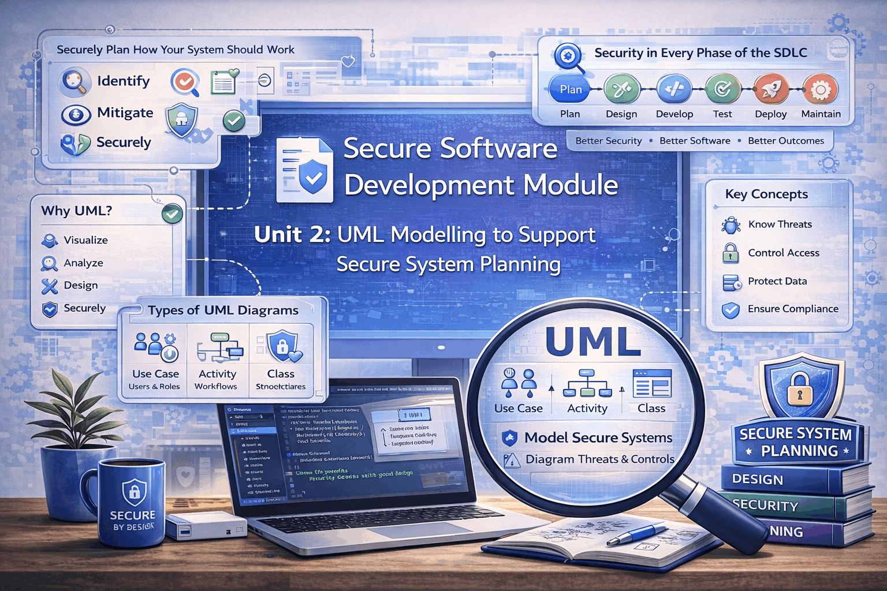
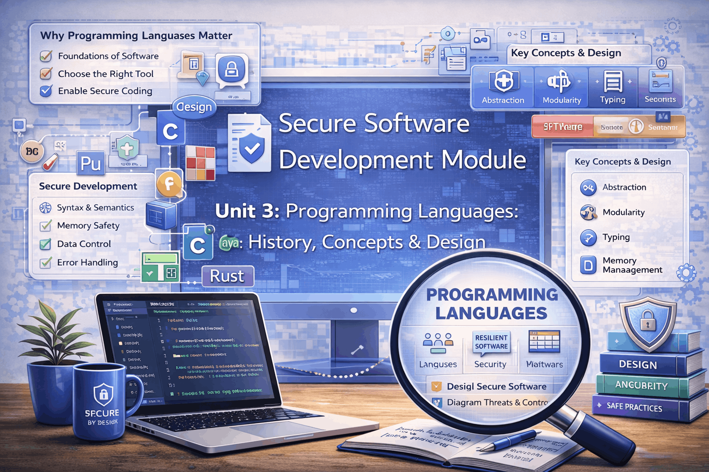
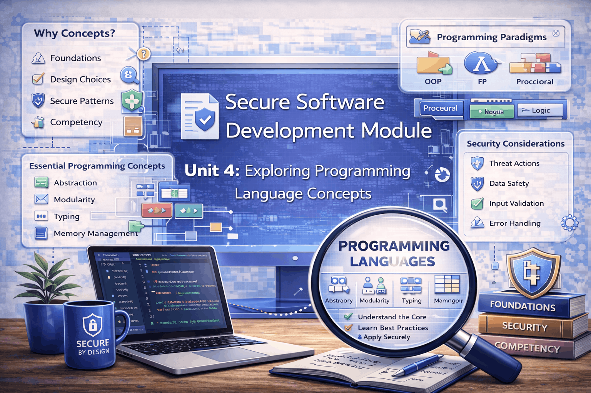
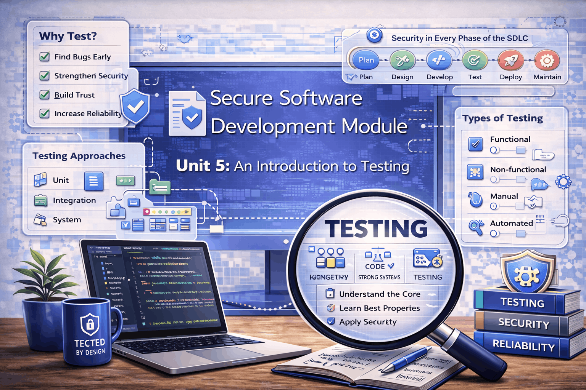
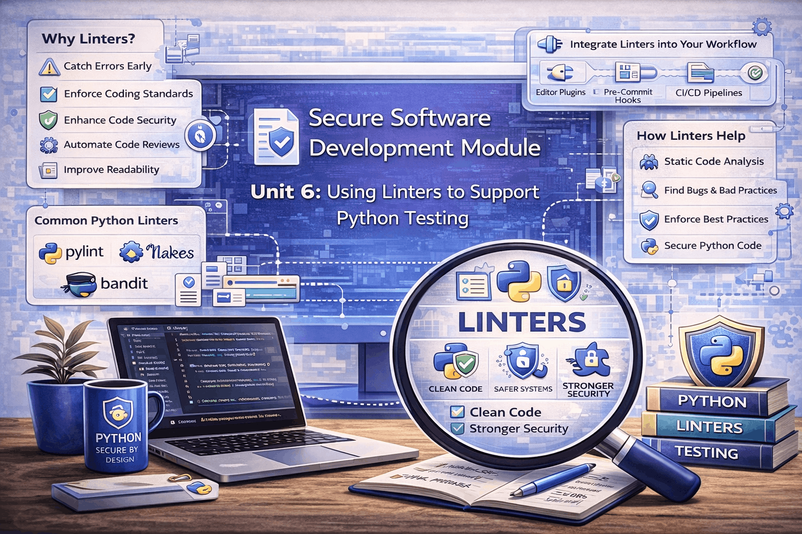
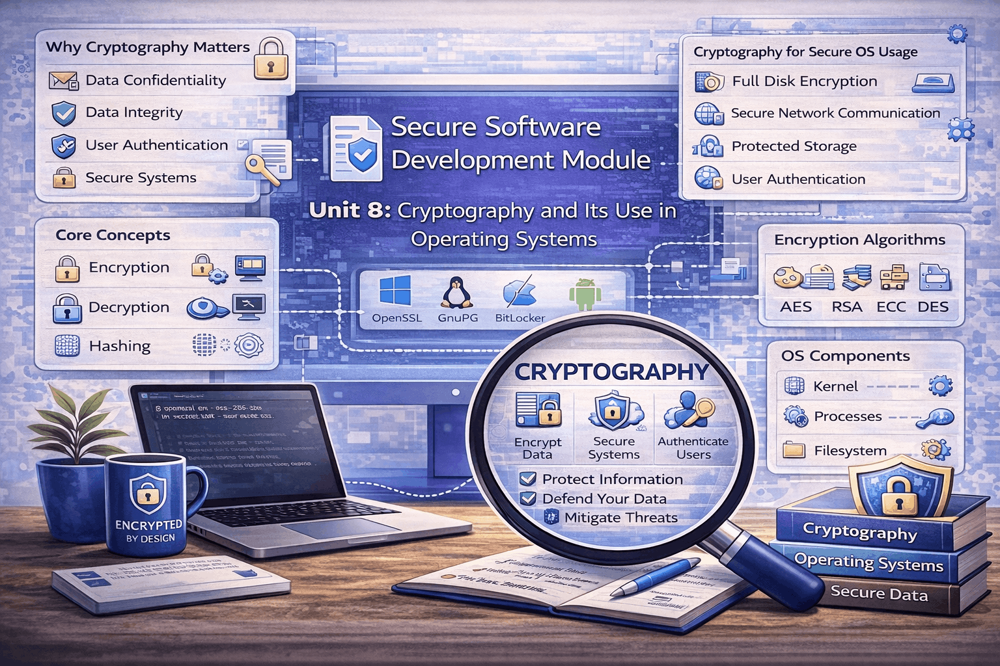
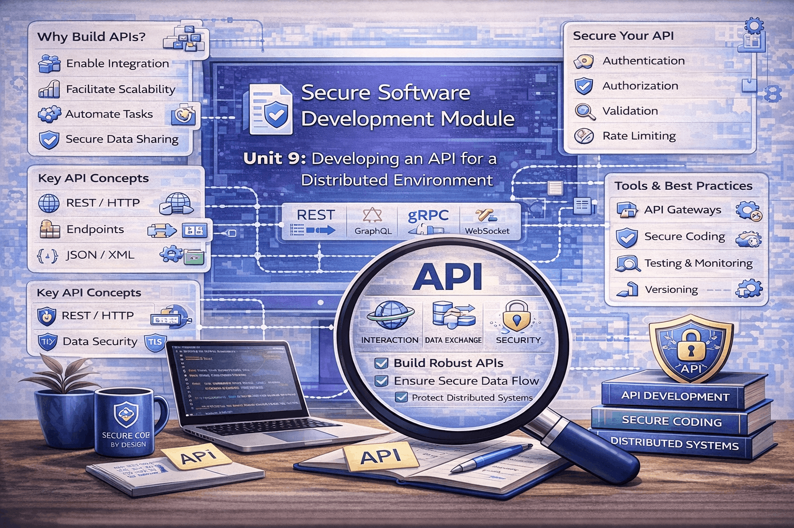
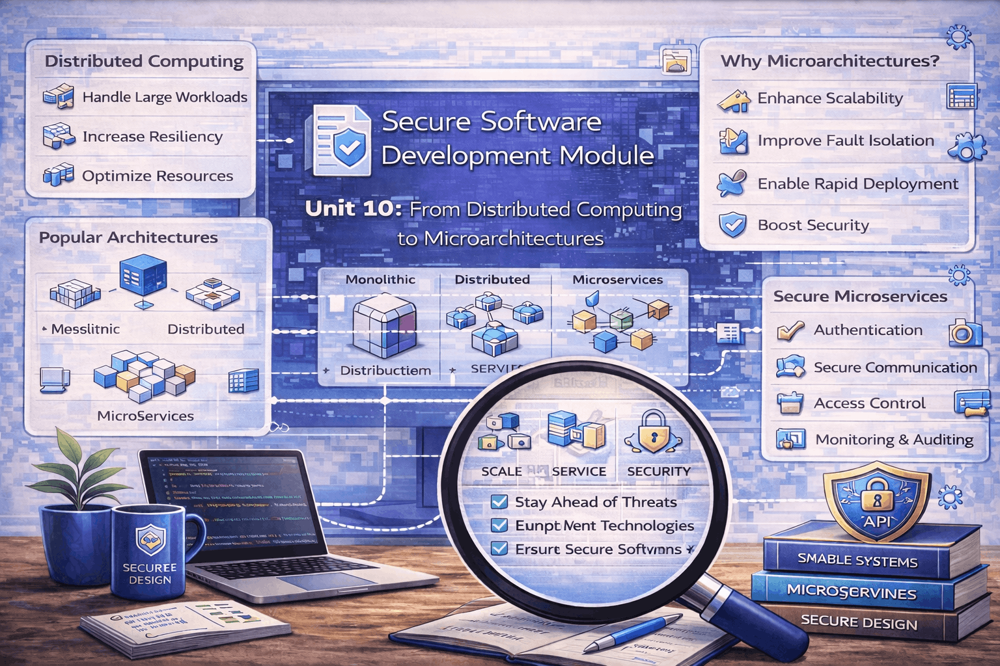
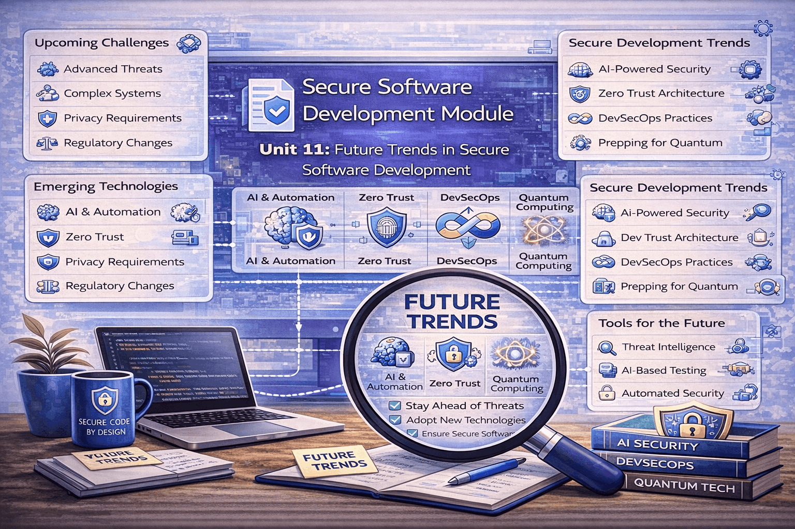
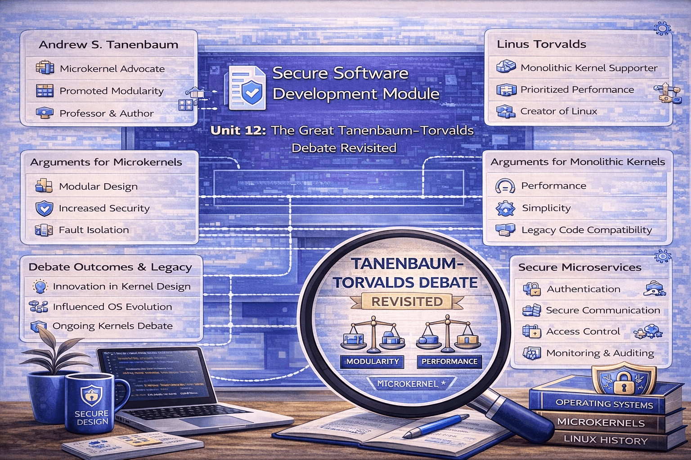

Secure Software Development
Learning outcomes
- Understand the differences between waterfall and agile software development approaches and their impact on secure software development.
- Apply UML modelling techniques to design, represent, and communicate software systems effectively.
- Understand key programming language concepts, paradigms, and design patterns, and how they influence software security.
- Identify common security vulnerabilities in software and apply best practices to reduce risks during development.
- Analyse the security implications of programming techniques such as recursion and regular expressions.
- Understand and apply software testing methods, tools, and industry standards to identify and mitigate security issues.
- Use code quality tools such as linters to improve maintainability, consistency, and security in Python applications.
- Understand the role of operating systems, virtualisation, and system-level components in software security.
- Apply cryptographic principles and secure API design practices to protect data in distributed systems.
- Evaluate modern software architectures (e.g. microservices, distributed systems) and emerging technologies in terms of their security challenges and benefits.
Unit 1: Introduction to Secure Software Development
Overview
In this unit, I learned about the basics of secure software development. It introduced different development approaches such as waterfall and agile, and how they affect security. The unit also covered UML and the importance of creating a risk-aware culture in organisations.
Reflection
This unit helped me understand that security should be part of the whole development process, not something added at the end. I found it useful to compare waterfall and agile, as it showed why flexible approaches are better for modern systems. It also made me realise that people and organisational culture are just as important as technical solutions when it comes to security.

Unit 2: UML Modelling to Support Secure System Planning
Overview
In this unit, I learned how UML can be used to support secure system design. I created flow charts and explored how processes can be broken down into smaller steps. The unit also introduced how security issues can appear during system design.
Reflection
This unit showed me how important planning and design are for security. Creating flow charts helped me understand how systems work step by step. It also made me realise that identifying problems early in the design stage can prevent bigger issues later.

Unit 3: Programming Languages: History, Concepts & Design
Overview
In this unit, I learned about the history and development of programming languages. It covered key concepts such as programming paradigms, object-oriented programming, and design patterns, using Python as an example.
Reflection
This unit helped me understand how programming languages have evolved and why they are designed the way they are. Learning about concepts like inheritance and abstraction improved my coding knowledge. It also made me aware that the way code is written can affect security.

Unit 4: Exploring Programming Language Concepts
Overview
In this unit, I explored programming concepts such as regular expressions and recursion. The focus was on how these techniques are used and how they can impact system security.
Reflection
This unit helped me realise that even useful programming tools can create risks if not used properly. I learned that recursion can cause performance problems and that regular expressions can be exploited. It made me think more carefully about writing safe and efficient code.

Unit 5: An Introduction to Testing
Overview
In this unit, I learned about software testing and its role in security. It covered different testing methods, industry standards, and tools used in Python to automate testing.
Reflection
This unit showed me that testing is essential for building secure software. I learned about different ways to test systems and how to identify possible weaknesses. It also helped me understand how professionals use standards and tools to improve software quality.

Unit 6: Using Linters to Support Python Testing
Overview
In this unit, I learned about using linters to improve Python code quality. The unit focused on tools that detect errors, enforce coding standards, and support secure development.
Reflection
This unit helped me understand how important clean and consistent code is for security. Using linters showed me how small issues can be detected early. The group assessment also helped me improve my teamwork skills, as I learned how to work with others, share tasks, and review code together.
Unit 7: Introduction to Operating Systems
Overview
In this unit, I learned about operating systems and how they support software. It covered processes, threads, scheduling, and security features in operating systems.
Reflection
This unit helped me understand how software interacts with the operating system. I learned about risks at the system level and how they can affect applications. It also made me realise the importance of system-level security and isolation techniques like virtualisation.

Unit 8: Cryptography and Its Use in Operating Systems
Overview
In this unit, I learned about cryptography and how it is used to secure data. The unit included working with cryptographic libraries in Python.
Reflection
This unit showed me how important encryption is for protecting data. I also learned that cryptography must be used carefully, as mistakes can create vulnerabilities. It helped me understand both the benefits and risks of using security libraries.

Unit 9: Developing an API for a Distributed Environment
Overview
In this unit, I learned how to develop an API using Python. It covered CRUD operations, Flask, and the basics of distributed systems and data handling.
Reflection
This unit helped me understand how backend systems work and how applications communicate. Building an API gave me practical experience. It also made me realise that APIs are common targets for attacks and must be designed securely.

Unit 10: From Distributed Computing to Microarchitectures
Overview
In this unit, I learned about different system architectures, including monolithic systems, microservices, and distributed systems. It also covered security challenges in virtual and distributed environments.
Reflection
This unit helped me understand how modern systems are built and why architectures have changed over time. I learned that distributed systems offer benefits but also increase security risks. It made me think more about how design choices affect security.

Unit 11: Future Trends in Secure Software Development
Overview
In this unit, I explored future trends in secure software development, including IoT, fog computing, and cyber-physical systems. It also connected all previous topics in the module.
Reflection
This unit was challenging, especially the coding assignment. It helped me apply many of the concepts I had learned in one project. I found it useful because it showed how everything connects in real-world development. It also made me aware of future security challenges in new technologies.

Unit 12: The Great Tanenbaum-Torvalds Debate Revisited
Overview
In this unit, I explored the debate between monolithic and microservices architectures. It looked at different system design approaches and their relevance in modern computing.
Reflection
This unit helped me think more critically about system design decisions. I learned that there is no single best solution, and choices depend on the situation. It made me realise how important it is to balance performance, complexity, and security.